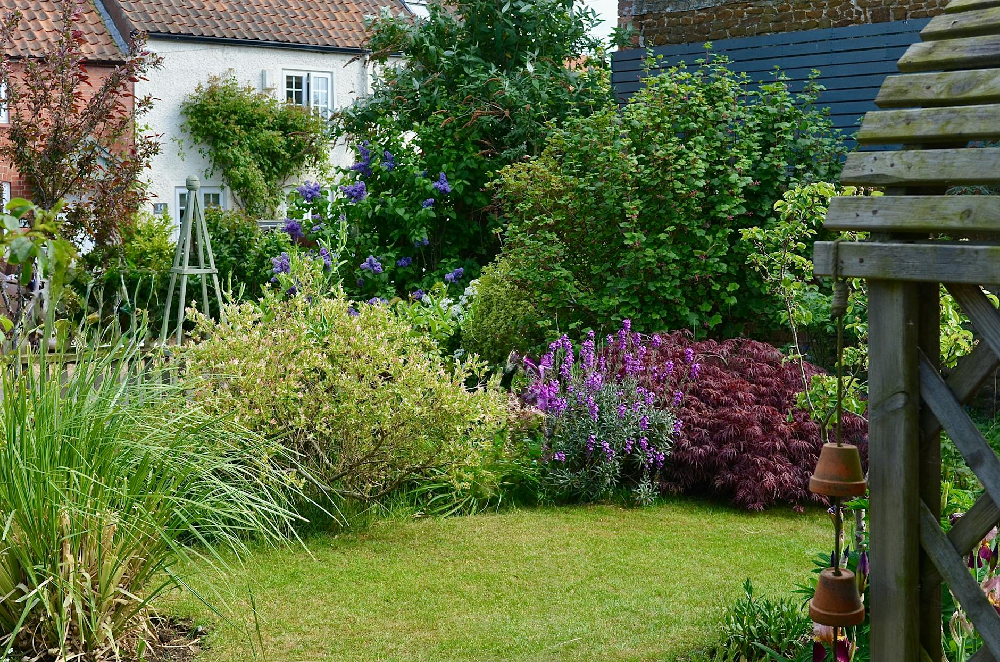
Every project tells a story. Browse our portfolio of residential gardens, commercial grounds, and dramatic landscape transformations across Austin and the Hill Country.
Filter by project type to find the inspiration you're looking for.
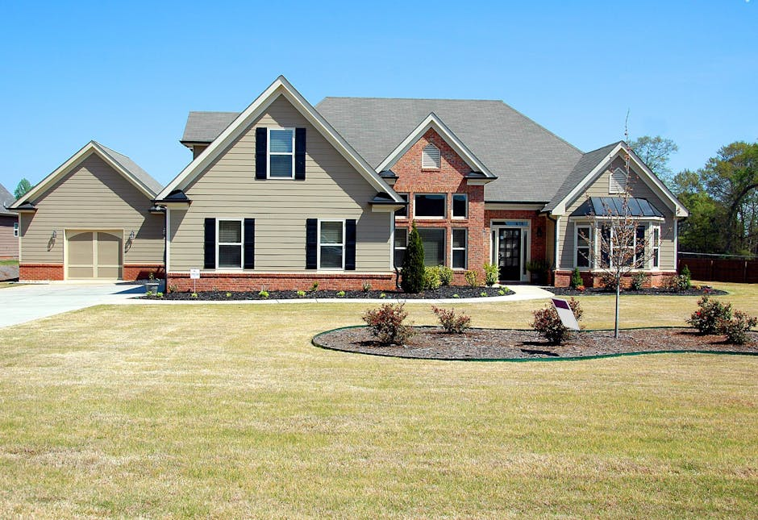
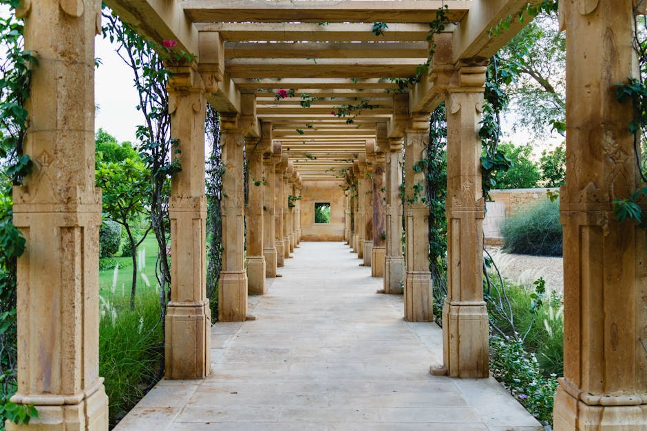
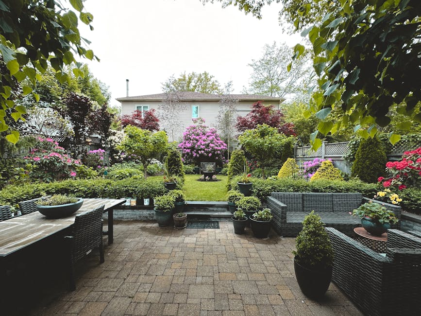
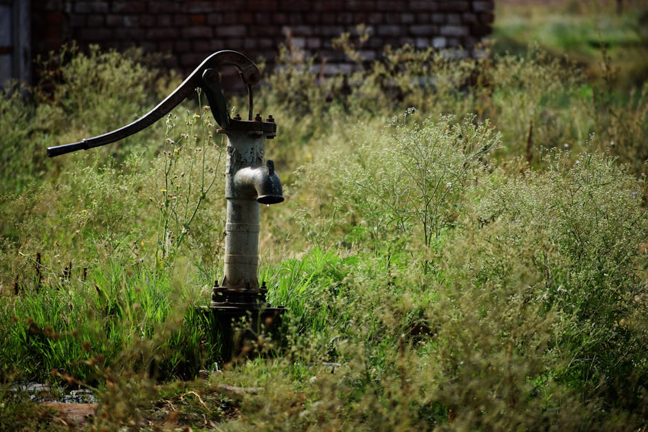
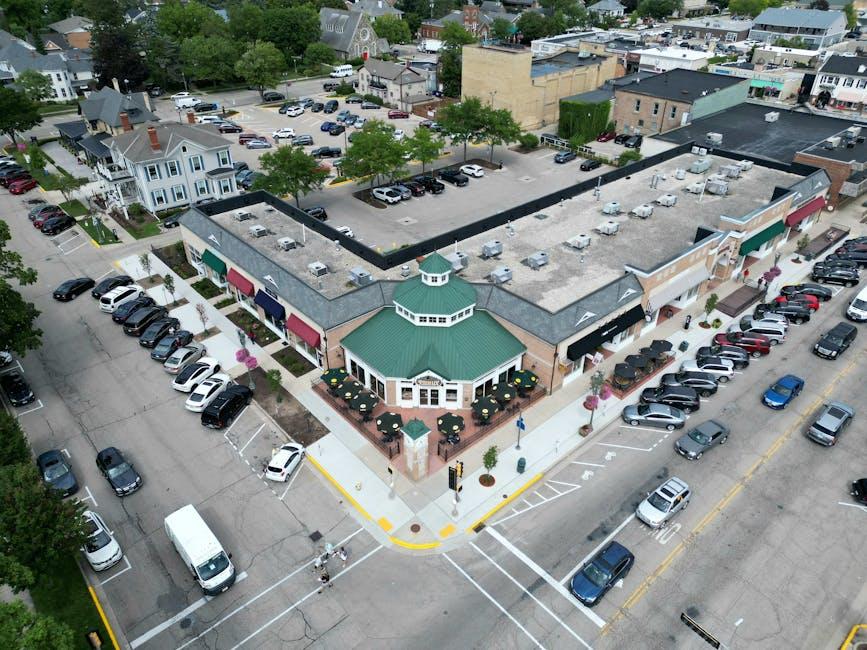
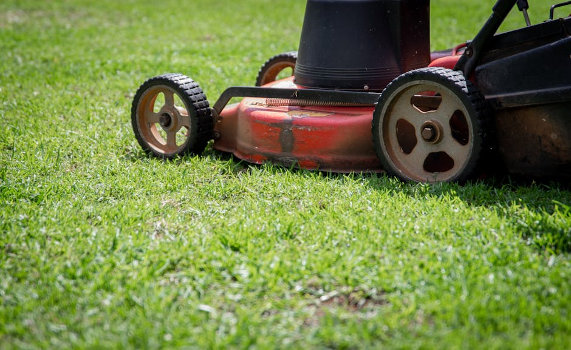
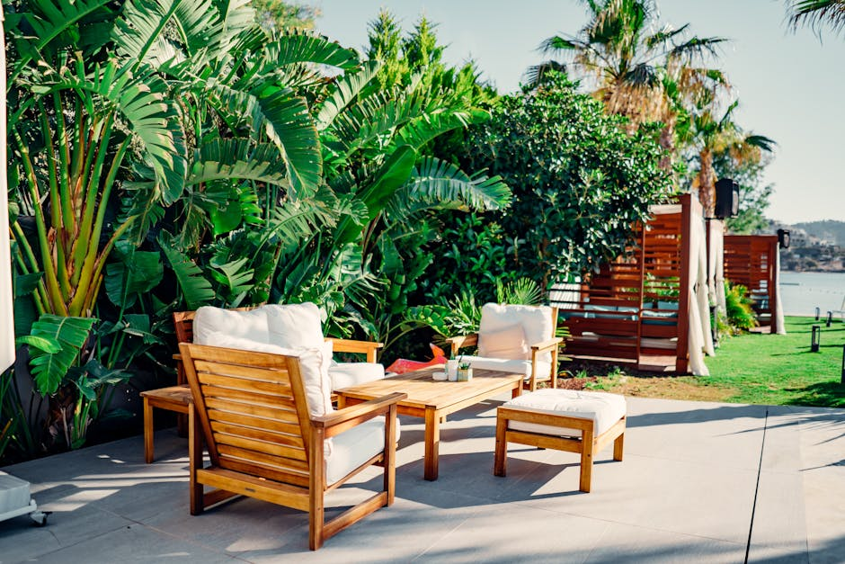
See the dramatic difference a professional landscape team makes. These are real Austin-area properties we've transformed.
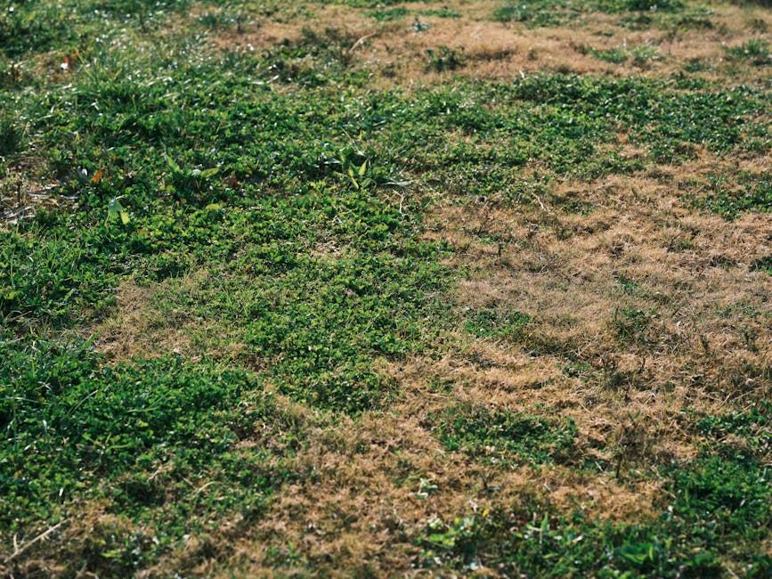
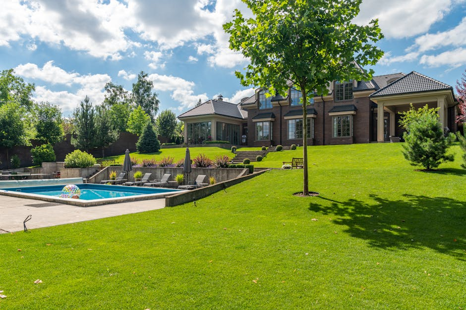
Removed dead grass, redesigned planting beds, installed native drought-tolerant plants and fresh sod.
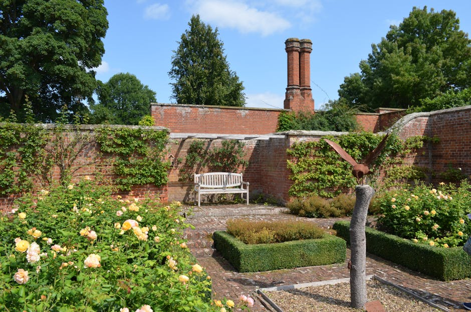
Converted overgrown, unusable space into a fully landscaped backyard oasis with paver patio and garden beds.
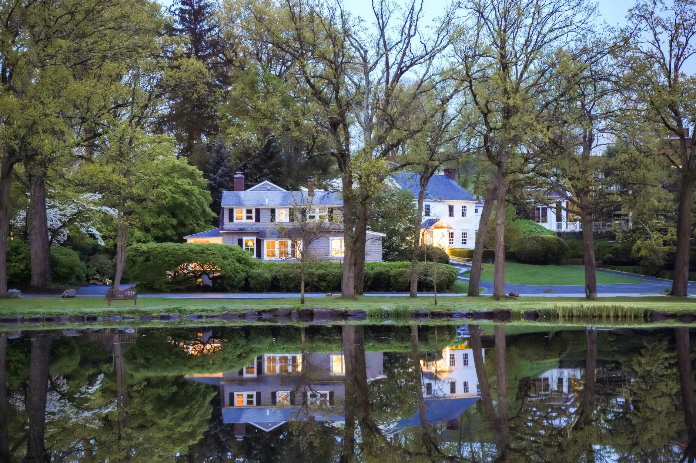
Let's talk about your property and what's possible. Free consultations, no obligation.